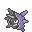

Attacke
Giftspitzen
Gift Status18 Pokémon
Status18 Pokémon
Eine Falle mit Giftdornen vergiftet neue Gegner.
Werte
- Typ
- Gift
- Kategorie
- Status
- Stärke
- —
- Genauigkeit
- trifft immer
- AP
- 20
- Ziel
- Seite des Gegners
Eigenschaften
Wird von Magiemantel zurückgeworfenDurch Level-Aufstieg
Diese Pokémon lernen die Attacke auf dem angegebenen Level.
 #015BiborKäferGiftLv. 29
#015BiborKäferGiftLv. 29 #029Nidoran♀GiftLv. 31
#029Nidoran♀GiftLv. 31 #030NidorinaGiftLv. 35
#030NidorinaGiftLv. 35 #031NidoqueenGiftBodenLv. 1
#031NidoqueenGiftBodenLv. 1 #032Nidoran♂GiftLv. 31
#032Nidoran♂GiftLv. 31 #033NidorinoGiftLv. 35
#033NidorinoGiftLv. 35 #034NidokingGiftBodenLv. 1
#034NidokingGiftBodenLv. 1 #072TentachaWasserGiftLv. 13
#072TentachaWasserGiftLv. 13 #073TentoxaWasserGiftLv. 13
#073TentoxaWasserGiftLv. 13
#091AustosWasserEisLv. 1 #205ForstellkaKäferStahlLv. 1
#205ForstellkaKäferStahlLv. 1 #211BaldorfishWasserGiftLv. 21
#211BaldorfishWasserGiftLv. 21 #315RoseliaPflanzeGiftLv. 28
#315RoseliaPflanzeGiftLv. 28
Als Ei-Attacke
Diese Pokémon können die Attacke von einem Elternteil erben.